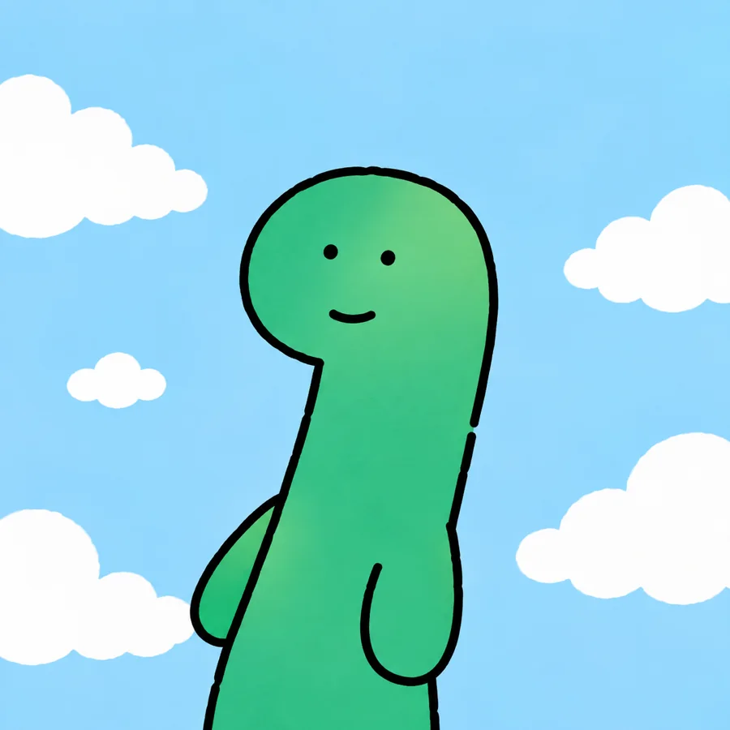
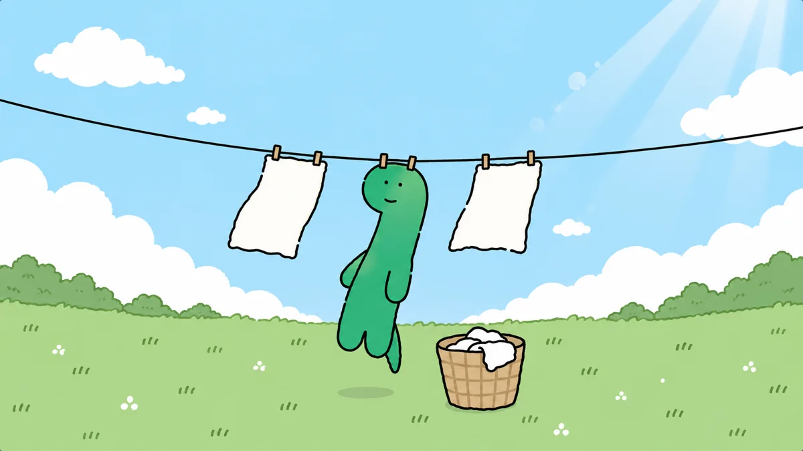

2026 ACTIVITY ARCHIVE
활동을
근거로.
안녕하세요, TYTL입니다. 2026년에 진행한 개발, CTF·워게임, 취약점 분석, 기술 기록, 보안 세미나, 대회형 프로젝트를 공개된 결과물과 함께 정리했습니다.
FIELD NOTE / 2026

기록하고
검증하기!
검증하기!
Brachio's activity log↗
01 / ABOUT
흩어진 활동을 잇는
하나의 기록
T-blog의 글 36개와 GitHub의 공개 저장소 6개를 다시 살펴보고, 결과물이 무엇인지와 그 과정에서 무엇을 배웠는지를 여섯 주제로 분류했습니다.
공개 자료로 확인되지 않는 수상, 자격증 취득, 버그바운티 채택 실적은 성과로 적지 않았습니다. 확인된 사실과 앞으로의 목표를 구분하는 것이 이 기록의 기준입니다.
첫 기록: 개발 활동 전체 보기
02 / EXPLORE
여섯 갈래의 활동
같은 프로젝트도 관점에 따라 역할을 나누어 기록했습니다.
카드를 눌러 구체적인 결과물을 확인할 수 있습니다.
01 / 06↗개발Unity 게임, Go 파일 공유 서비스, CTF 플랫폼과 보안 자동화 도구를 구현한 과정입니다.활동 읽기
02 / 06↗CTF/WargameDreamhack 학습 7편과 워게임 풀이 4편, 입문 CTF 플랫폼과 솔버 개발을 정리했습니다.활동 읽기
03 / 06↗Bug BountyCVE 재현·분석과 허가 범위 중심의 LLM 보안 테스트 자동화 프로젝트를 돌아봅니다.활동 읽기
04 / 06↗블로그/기술문서T-blog 36편과 GitHub README, 새 GitHub Pages 포트폴리오로 이어진 기록 활동입니다.활동 읽기
05 / 06↗논문/컨퍼런스하계 보안 세미나 12강과 ARM PAC 분석을 통해 넓힌 연구 관심사를 정리했습니다.활동 읽기
06 / 06↗공모전/자격증게임잼 프로그래머 참여와 입문 CTF 제작 경험, 아직 비어 있는 자격증 기록을 구분했습니다.활동 읽기
03 / WRITING
활동 보고서
여섯 주제의 회고와 다음 성장을 위한 계획입니다.
NEXT CHAPTER시도한 것을 정리하고,
성장 계획 보기